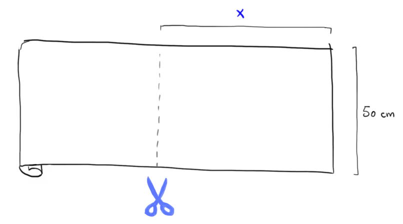

L'idea chiave racchiusa negli esempi visti in precedenza è la possibilità di descrivere una
quantità, detta
variabile dipendente,
in funzione di un'altra quantità, detta
variabile indipendente.
Esempio
Nell'esempio del sapone alla spina
-
il prezzo da pagare \(\color{red}{y}\) dipende dalla quantità di sapone acquistato \(\color{blue}{x}\)
-
la legge che li mette in relazione è
\[
\color{red}{y} \color{black}{} = 6 \color{blue}{x} \color{black}{} + 1
\]
Esempio
Nell'esempio del bastone
-
la lunghezza dell'ombra \(\color{red}{L}\) dipende dall' inclinazione dei raggi di luce \(\color{blue}{\alpha}\)
-
la legge che li mette in relazione è
\[
\color{red}{L} \color{black}{} = 3 \, tan\left(\color{blue}{\alpha} \color{black}{} \right)
\]
In generale, date una variabile indipendente \(\color{blue}{x}\) ed una variabile \(\color{red}{y}\) da essa dipendente, si dice che
\(\color{red}{y}\) è funzione di \(\color{blue}{x}\) e si scrive
\[
\color{red}{y} \color{black}{} = f\left(\color{blue}{x}\color{black}{}\right)
\]
se esiste una legge \(f\) che dato il valore di \(\color{blue}{x}\) ci permette di individuare univocamente il valore di \(\color{red}{y}\).
Un altro modo di indicare una funzione è
\[
f: \,\,\, \color{blue}{x} \color{black}{} \longmapsto \color{red}{y}
\]
Esempio
Un negozio vende stoffa al metro. Il negoziante taglia il quantitativo di stoffa richiesta dal cliente
a partire da un rotolo di tessuto avente lato \(50\) centimetri. Indichiamo con \(\color{blue}{x}\) il
lato del rettangolo di stoffa tagliato dal rotolo.

Indichiamo con \(\color{red}{y}\) l'area del pezzo di stoffa tagliato.
Sappiamo che essa dipende dalla lunghezza \(\color{blue}{x}\) del lato secondo la seguente legge.
\[
\color{red}{y} \color{black}{} = 50 \, \color{blue}{x}
\]
In questo caso
-
La lunghezza \(\color{blue}{x}\) del pezzo di tessuto tagliato è la variabile indipendente.
-
L'area \(\color{red}{y}\) del pezzo di stoffa è la variabile dipendente.
-
La legge che mette in relazione \(\color{blue}{x}\) ed \(\color{red}{y}\) è
\[
f(x) = 50\,x
\]
Usando la notazione esposta prima si ha che
\[
f(\color{blue}{3}\color{black}{}) = \color{red}{150}
\]
ovvero, se \(\color{blue}{x} \color{black}{} = \color{blue}{3}\) allora l'area del tessuto è \(\color{red}{y} \color{black}{} = 50\,\cdot\,\color{blue}{3} \color{black}{} = \color{red}{150}\)
Se invece \(\color{blue}{x} \color{black}{} = \color{blue}{7}\), si ha \(\color{red}{y} \color{black}{} = 50 \,\cdot\, \color{blue}{7} \color{black}{} = \color{red}{350}\), il che può essere espresso in due modi
\[
f(\color{blue}{7}\color{black}{}) = \color{red}{350}
\]
ed anche
\[
f\,: \,\,\, \color{blue}{7} \color{black}{} \longmapsto \color{red}{350}{}
\]